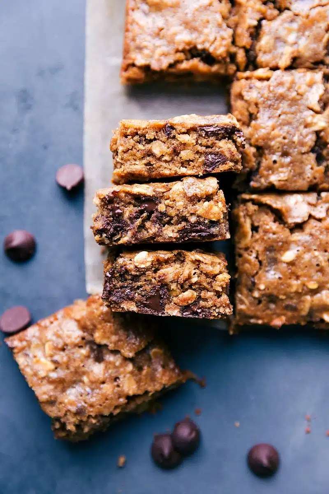

Soft Cinnamon Sugar Oatmeal Squares

Description
These soft-baked cinnamon sugar oatmeal squares are great for a
breakfast or a snack. They've got great ingredients - oats, nut butter,
and chocolate - and are filling, tender, soft, and ultra chewy. These
bars taste like a mash-up of soft granola and a bowl of oatmeal; you'll
get comforting bites of oat-filled goodness.
They contain nut butter and oats, so they have a fair amount of protein
and fiber.
Ingredients
- 1 cup old-fashioned oats
- ⅓ cup oat flour (finely ground oats)
- ½ teaspoon ground cinnamon
- ½ teaspoon fine sea salt
- ⅓ cup creamy peanut butter
- ¼ cup melted coconut oil
- ¼ cup honey
- ⅓ cup light brown sugar, lightly packed
- 1 teaspoon pure vanilla extract
- 1 large full egg
- 1 large egg yolk (save the whites for another recipe or discard them)
- ½ cup dark chocolate chips, coarsely chopped
Steps
-
Preheat the oven to 325 degrees F. Line an 8x8-inch baking pan with
parchment paper, leaving an overhang (These will be nearly
impossible to get out otherwise).
-
To make oat flour, place old-fashioned or quick oats in a blender
and pulse until they resemble flour. Measure after blending to make
sure you have the right amount.
-
Combine the ingredients except for the dark chocolate chips in a
large bowl and stir until smooth and well combined. Coarsely chop
the dark chocolate chips and add to the batter. Stir to combine.
Transfer batter to prepared pan.
-
Bake for 23-26 minutes or until set at the edges (it will look
slightly wet in the center, but as long as it doesn't jiggle it's
done. The bars will firm up as they cool; be careful to not over
bake).
-
Store these bars in an airtight bag or container at room temperature.
These bars are best enjoyed within 2-3 days of making.
-
Wrap individual bars tightly in plastic wrap and place in an airtight
freezer-safe container. Thaw bars at room temperature.